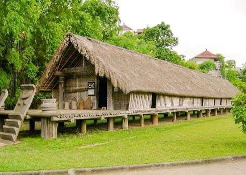
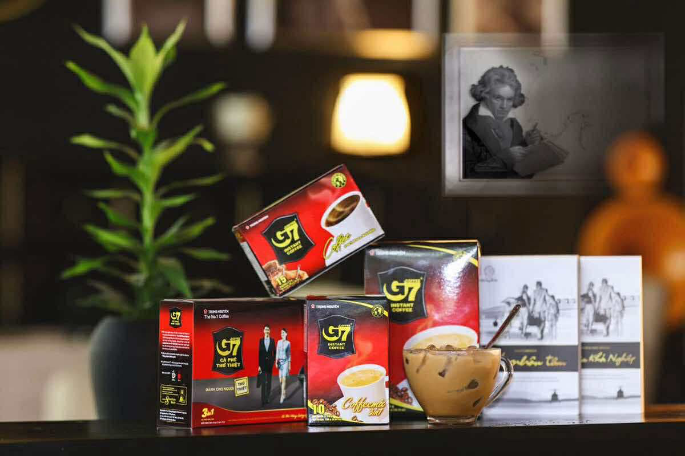
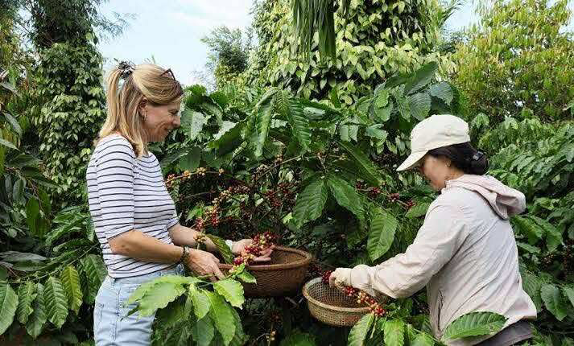

文化と人々
ダクラク省は多民族が共に暮らす地域で、エデ族をはじめ、ジャライ族、ムノン族などが独自の言語と伝統を守りながら共生しています。特にエデ族の伝統家屋「ロンハウス」は、女性を中心に家族が暮らす独特の文化背景を持ち、長く伸びる木造構造が特徴です。また、ユネスコ無形文化遺産にも登録されたゴング音楽は、祭りや儀式で神々へ祈りを捧げる重要な役割を担い、大地に響くリズムは訪れる人々を魅了します。広大なコーヒー農園では、多くの人々が豊かな自然と共に働き、収穫の季節には香ばしい香りが町全体を包み込みます。精霊信仰が色濃く残り、森や湖は神聖な場所として大切にされています。
観光地 ＊ 名所

ドンエレク湖は静かな湖畔の景色が美しく、象に乗って湖を散策する体験が人気です。ドライヌール滝は迫力ある水しぶきとマイナスイオンが心身を癒し、コーヒー博物館ではベトナムのコーヒー文化の歴史を学べます。バンメトート市街は活気あるマーケットやカフェが集まり、民族村では伝統工芸や暮らしを間近で体感できます。

特産品とお土産
コーヒー豆やドリップセット、天然蜂蜜、民族手織り布、竹細工、ハーブティーなど高原ならではのお土産がそろいます。
体験とアクティビティ
コーヒー農園ツアー、滝のハイキング、ゴング演奏や伝統料理の体験など、五感で楽しめるアクティビティが充実しています。